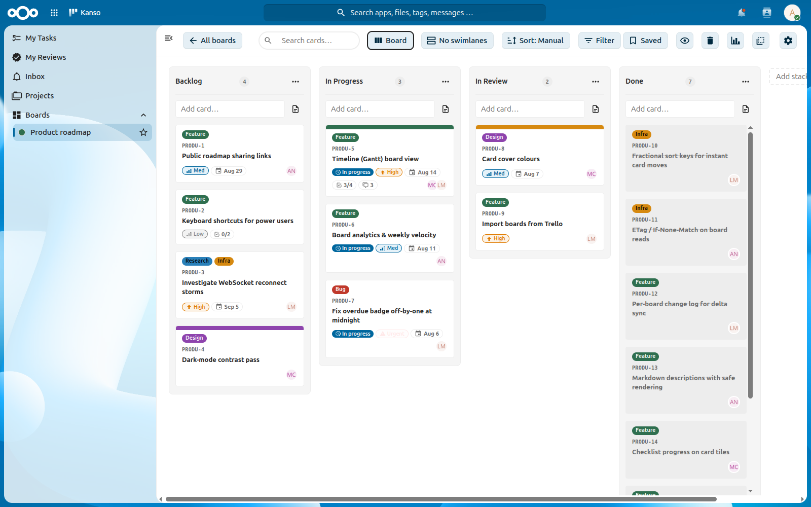
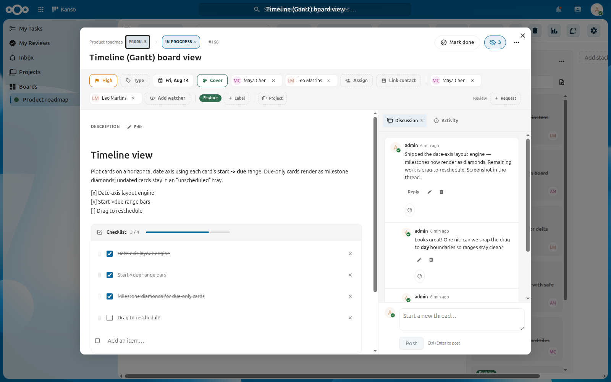
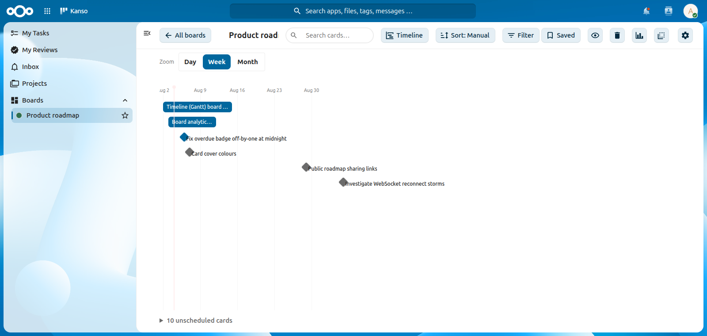
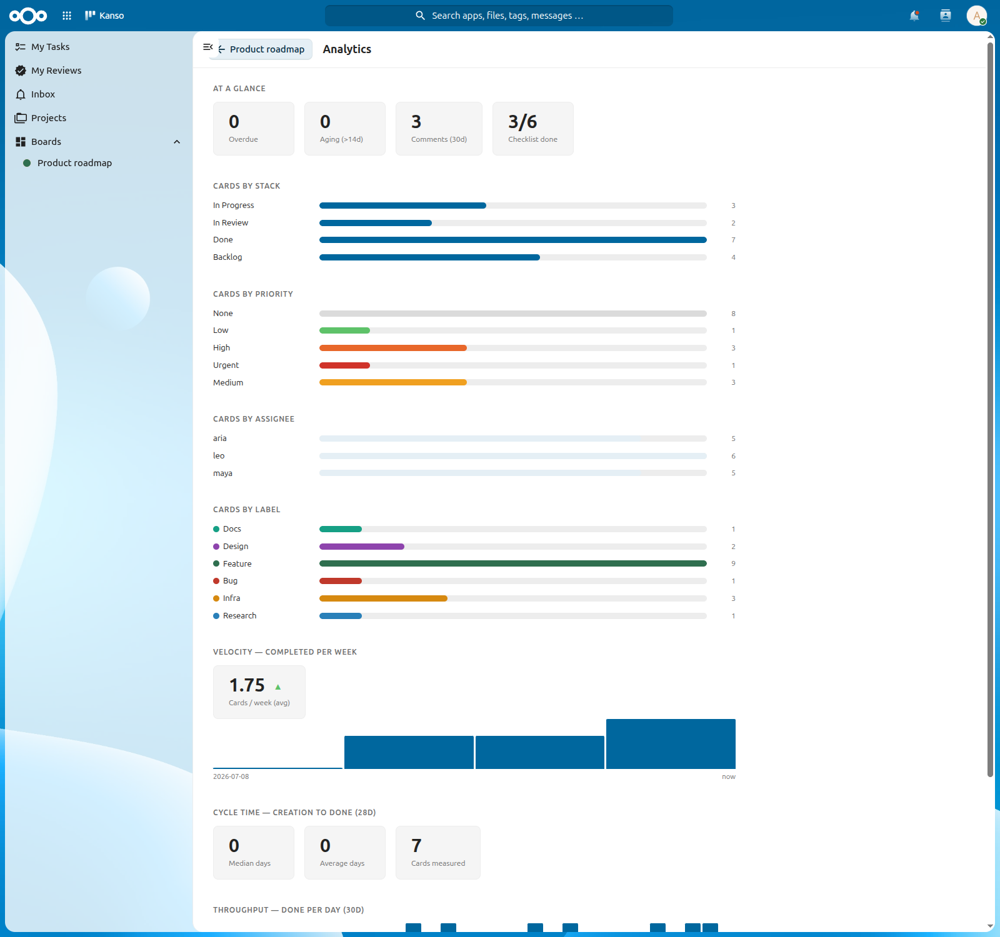

Kanban for Nextcloud
A kanban board that stays out of your way
Kanso is a fast, from-scratch kanban app for your own Nextcloud. Instant drag & drop, realtime sync, reviews, timelines and analytics — free under the AGPL, with no per-seat pricing.

Why Kanso
Built to feel instant, on a server you already run
Kanso isn’t a fork. It’s a kanban board written from scratch around a few performance decisions, and it lives inside your Nextcloud.
Fast by design
A card move is a single-row update, never a bulk renumber. Summary-only payloads, ETag caching and virtualized columns stay smooth past 2,000 cards.
Live for everyone
Changes show up for everyone on the board through notify_push when your server has it, with a light polling fallback everywhere else.
Yours, not rented
Kanso runs on your own Nextcloud and keeps its data in its own tables. Your users and groups already work. No lock-in, no per-seat pricing.
Kanso (簡素) is one of the seven principles of Japanese Zen aesthetics. It means simplicity: the deliberate elimination of clutter, so that only what matters remains.
Features
Everything a team board needs. Nothing it doesn’t.
All of this ships today. The full, always-current list lives in the project README.
Cards
Cards that hold the whole task
Open a card and everything about the work is in one place.
- Markdown descriptions, labels, due dates, assignees and priorities
- Checklists and parent ↔ child cards — a parent completes when its children are done
- Threaded comments with @mentions, and watchers on a card, a thread or a whole board
- Attachments up to 100 MiB, custom fields, time tracking and private reminders

Views
Board, list or timeline
Switch per board — Kanso remembers your choice.
- A Timeline (Gantt) that plots cards by start → due, with due-only cards as milestones
- A dense List view for scanning hundreds of cards
- Swimlanes by assignee, label or priority, and saved filters to come back to

Analytics
See how work actually flows
Per board and per project, with no setup.
- Velocity with trend, cycle time and throughput
- Breakdowns by column, priority, assignee and label
- Overdue, aging and checklist-progress signals

And more
The rest of the toolbox
Workflow, integrations and the small things that make a board pleasant to live in.
-
Review workflow
Request a review, then approve or request changes. Custom review types, and an optional done-gate that holds a card until every review is approved.
-
Automation
Stack roles and WIP limits, recurring cards on RRULE schedules, auto-archive rules and card templates.
-
My Work & Projects
One hub for your tasks, the reviews waiting on you and an inbox of mentions — plus Projects that collect cards across boards.
-
Sharing
Per-user and per-group access control, and an optional read-only public link that needs no Nextcloud account.
-
In your calendar
Every board you can read appears as a read-only CalDAV calendar of its due-dated cards, in Nextcloud Calendar, Tasks and on your phone.
-
Email intake
Point a board at an IMAP mailbox and incoming mail lands as cards, with an optional sender allowlist.
-
Code links
Attach pull requests and issues to a card. GitHub and Forgejo webhooks move cards as work opens, merges and closes.
-
Import, export, back up
Import from Deck, Trello JSON or CSV. Export any board as a zip with its attachments, and let admins schedule backups.
-
Keyboard-first
A command palette with full-text search across cards and comments, undo toasts, and a trash with restore.
Install
Up and running in a minute
Kanso is on the Nextcloud App Store, so an administrator can install it without touching the shell.
- In Nextcloud, open Apps and find Kanso under Organization.
- Click Download and enable.
- Open Kanso from the app menu and create your first board.
$ cd /path/to/nextcloud $ sudo -u www-data php occ app:install kanso
- Nextcloud
- 32 – 35
- PHP
- 8.2 – 8.5
- Databases
- Postgres · MySQL · SQLite
- License
- AGPL-3.0-or-later
Pre-built tarballs ship on GitHub Releases for servers that can’t reach the App Store — see the installation guide for PHP and Nextcloud version pairings. System cron drives recurring cards and reminders, and the High Performance Backend turns on realtime updates.
Support Kanso
Fund the roadmap
Kanso is built and maintained by one person. Sponsorship decides what gets built next.
The whole app is free for everyone under the AGPL, and that isn’t going to change. There’s no paid tier, no license key and no feature held back. Sponsoring moves your requests up the queue — whatever gets built still ships to everyone.
-
Supporter
$9 / month
For anyone who uses Kanso and wants it to keep improving.
- Sponsor badge on your profile
- Your name on this page
-
Daily user
$29 / month
For people and teams who rely on Kanso day to day.
- Your feature requests move up the queue
- Your name in the README and on this page
-
For teams
Team
$99 / month
For teams running Kanso on their Nextcloud.
- Everything in Daily user
- Your logo in the README and on this page
- Your issues triaged within 2 business days
-
Organization
$299 / month
For organizations that depend on Kanso.
- Everything in Team, with a large logo
- Direct email support
- A roadmap call each quarter
- A discount on a commercial license
Need one specific thing built? Fund a feature with a one-time $500 sponsorship and link the issue — it gets scheduled next, and larger work is quoted before it starts. Or say thanks with a one-off $50.
Sponsors
Thank you to everyone who has supported Kanso:
Commercial licensing
The AGPL requires anyone running a modified version — including over a network — to publish their source. If your organization can’t accept those terms, a separate commercial license is available.
Reach out at akfatih2@gmail.com.
Not ready to sponsor? Rating the app costs nothing and does more for Kanso’s reach than you’d think.
Give your Nextcloud a better board
Free, open source, and installed in a minute.